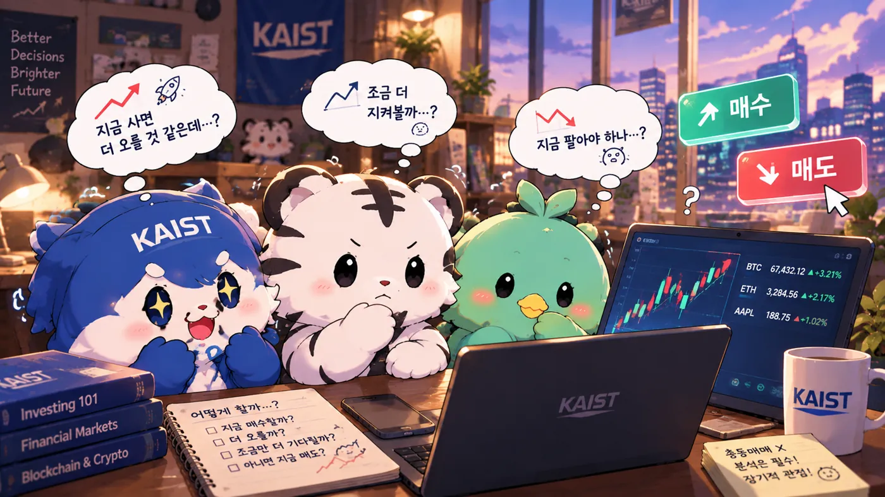
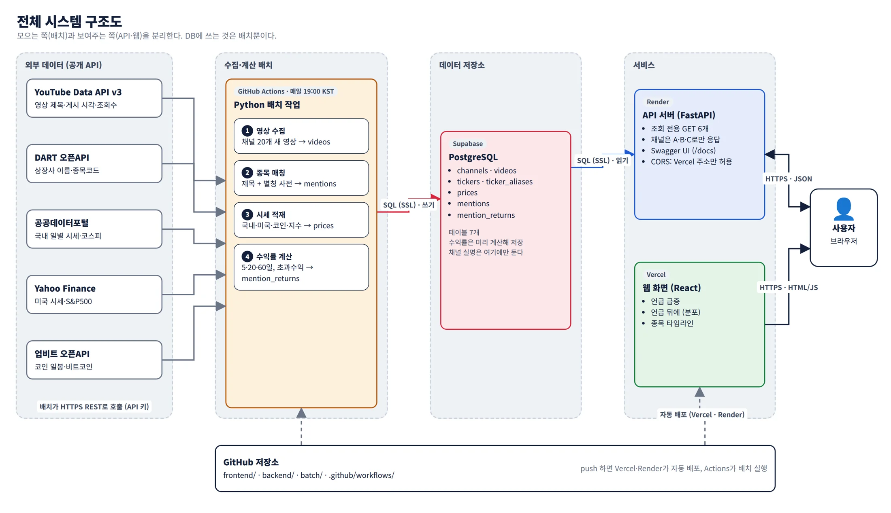
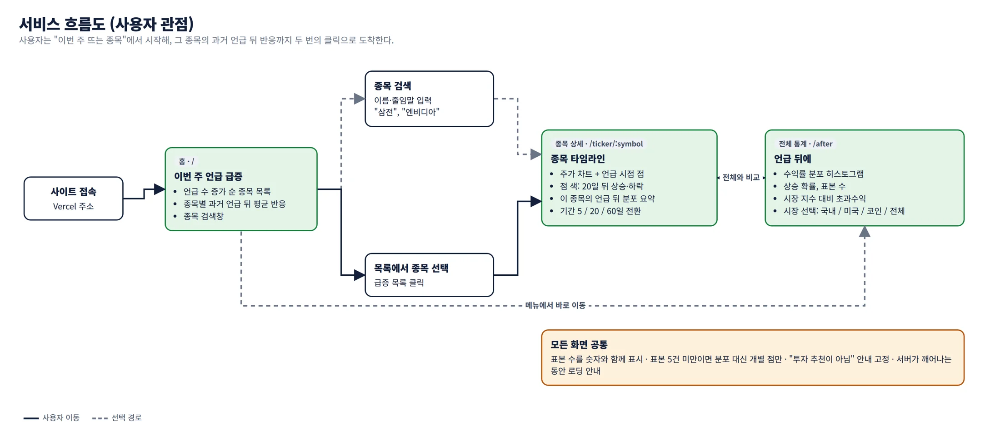
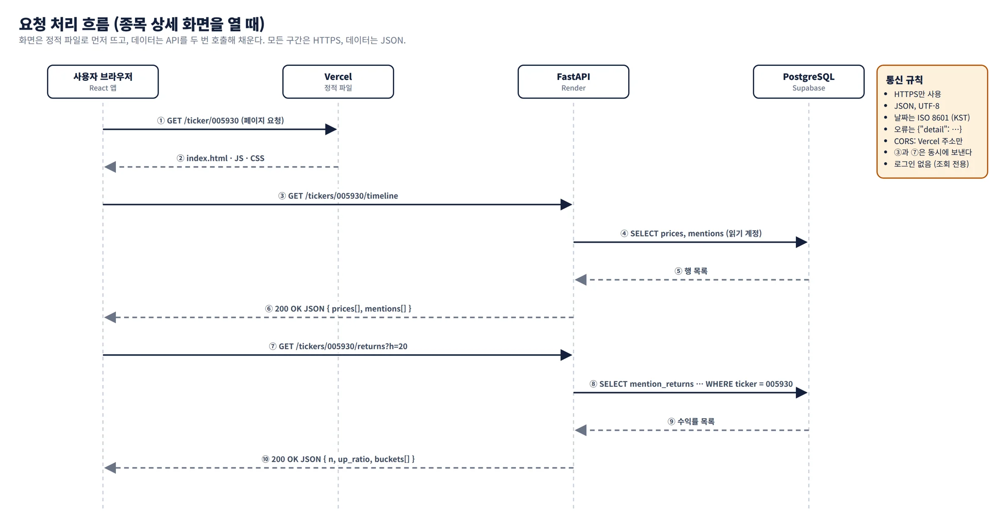
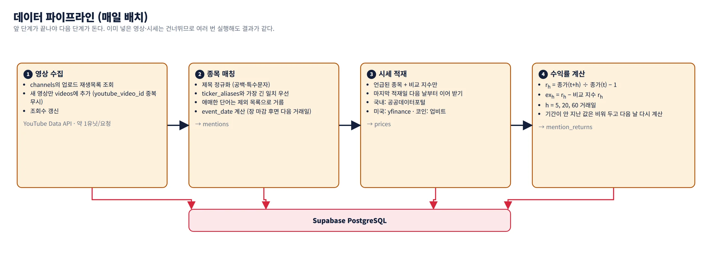
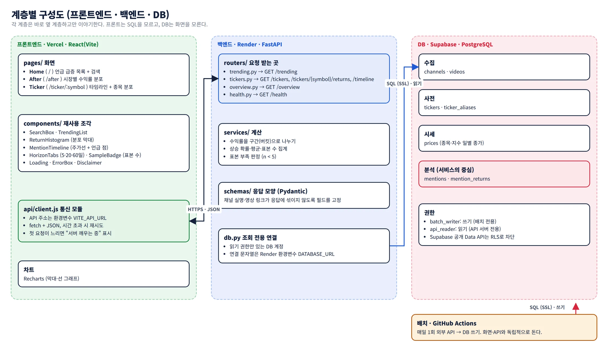
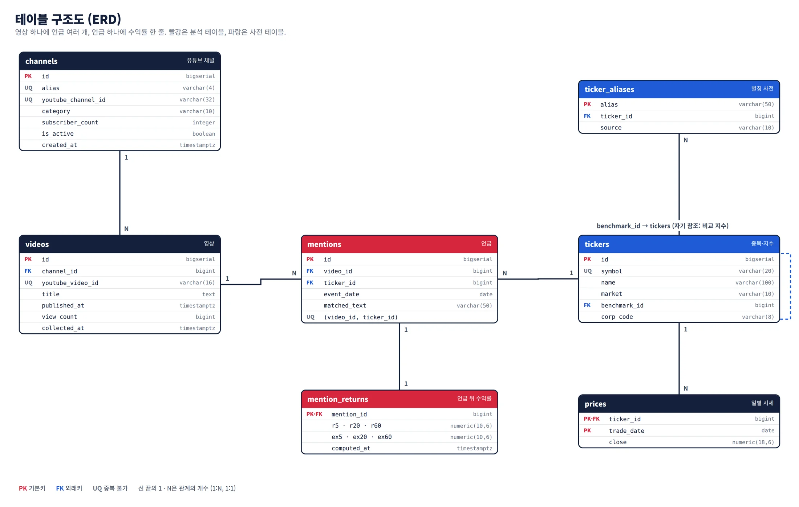

▲ 오르면
"역시 유튜버 말이 맞았어!"
맞은 경우는 오래 기억되고, 다음 영상도 믿게 된다.
클라우드컴퓨팅실습 5조 · KAIST 디지털금융MBA
주식·코인 유튜브가 언급한 종목의 이후 주가를 매일 모아, 5·20·60 거래일 뒤 수익률과 시장 대비 초과수익을 분포와 표본 수로 보여주는 웹 서비스
김지환오선호조인성채재희김현준
예시 화면 · 숫자는 가상
왜 이 주제인가

주식·코인 정보를 유튜브에서 얻는 사람이 늘었다. "주식 코인 전망"만 검색해도 "지금이 바로 매수 타이밍!", "비트코인 곧 폭등합니다!"가 쏟아진다.
제목과 썸네일에 종목 이름과 방향이 그대로 들어 있다. "이 종목, 곧 폭등합니다!" 구독자 100만 명이 같은 말을 듣는다.
"진짜 타도 되는 거야?"
지금 살까, 더 지켜볼까, 팔아야 하나. 판단 근거는 방금 본 영상의 분위기뿐이다. 그 유튜버가 전에 한 말들이 어떻게 됐는지는 알 수 없다.
그리고 결과는 둘 중 하나
둘은 기억에 남는 방식이 다르다맞은 경우는 오래 기억되고, 다음 영상도 믿게 된다.
틀린 경우는 금방 잊힌다. 그리고 다음 로켓에 또 올라탄다.
맞으면 기억하고, 틀리면 잊는다.
그래서 유튜브가 언급한 종목이 평균적으로 어떻게 됐는지, 아무도 모른다.
우리는 이 질문에 숫자로 답하려 한다. 개별 영상이 맞았는지가 아니라, 언급이 몰린 뒤 실제로 무슨 일이 있었는지.
해결하려는 문제
그래서 투자 판단이 과거 기록이 아니라 영상의 분위기와 기억에 기대게 된다. 게다가 언급이 몰리는 시점은 이미 주가가 오른 뒤인 경우가 많다.
우리가 만드는 것
유튜브 채널 20개의 최근 1년 영상 제목에서 종목을 찾고, 언급일 이후 5·20·60 거래일 수익률을 계산한다. 매일 자동으로 쌓인다.
주식·코인 채널 20개, 최근 1년
매일 새 영상 자동 추가
제목 속 이름·줄임말을 종목 코드로
"삼전" → 삼성전자, "엔비디아" → NVDA
언급일 기준 국내·미국·코인 일별 시세
장 마감 뒤 영상은 다음 거래일부터
수익률 분포, 상승 확률, 시장 대비 초과수익
코스피·S&P500·비트코인과 비교
| 항목 | 범위 |
|---|---|
| 대상 채널 | 국내 주식·코인 유튜브 채널 20개 |
| 수집 기간 | 최근 1년치 영상 + 이후 매일 자동 추가 |
| 대상 시장 | 국내 주식, 미국 주식, 암호화폐 |
| 측정 지표 | 언급 후 5·20·60 거래일 수익률, 상승 확률, 시장 지수 대비 초과수익 |
| 비교 지수 | 국내 → 코스피, 미국 → S&P500, 코인 → 비트코인 |
| 범위 밖 | 자막·댓글 분석, 영상 논조(추천·경고) 판단, 로그인·개인화, 실시간 시세 |
화면
/
요즘 유튜브에서 뜨는 종목과, 그 종목이 전에 떴을 때의 반응.
/after
유튜브 언급을 따라가면 평균적으로 어떻게 되나. 수익률 분포와 상승 확률, 시장 대비 초과수익.
20일 뒤 상승 확률 38% · 표본 24건
/ticker/:symbol
주가 위에 언급 시점을 점으로. 점 색이 20일 뒤 상승·하락.
● 20일 뒤 상승 ● 하락
화면 속 숫자는 예시입니다. 실제 값은 6주차 데이터 적재 후 채웁니다.
구현하고 싶은 기능
| ID | 기능 | 설명 | 화면 | 우선순위 |
|---|---|---|---|---|
| F1 | 언급 급증 목록 | 이번 주 언급 수가 직전 4주 평균보다 많이 늘어난 종목 순위 | 홈 | 필수 |
| F2 | 종목 검색 | 이름·줄임말로 종목 찾기 ("하닉" → SK하이닉스) | 홈 | 필수 |
| F3 | 언급 뒤 수익률 분포 | 5·20·60일 뒤 수익률을 구간별 막대로. 상승 확률, 평균 함께 표시 | 언급 뒤에, 종목 | 필수 |
| F4 | 시장 대비 초과수익 | 같은 기간 비교 지수 수익률을 뺀 값 | 언급 뒤에, 종목 | 필수 |
| F5 | 종목 타임라인 | 주가 차트 위에 언급 시점을 점으로. 점 색은 20일 뒤 상승·하락 | 종목 | 필수 |
| F6 | 표본 수 표시 | 모든 통계 옆에 표본 수. 5건 미만이면 분포 대신 개별 점만 | 전체 | 필수 |
| F7 | 매일 자동 갱신 | 새 영상 수집부터 수익률 계산까지 매일 1회 자동 실행 | 배치 | 필수 |
| F8 | 시장별 전체 통계 | 국내·미국·코인 전체 언급의 수익률 분포 | 언급 뒤에 | 필수 |
| F9 | 기간 필터 | 최근 3개월 / 6개월 / 1년 언급만 보기 | 언급 뒤에, 종목 | 선택 |
| F10 | 사건 출처 확장 | 유튜브 대신 트윗·뉴스 헤드라인을 사건으로 넣기 | 전체 | 확장 |
원칙과 차별점
누가 잘 맞혔나가 아니라, 유튜브 언급을 따라가면 어떻게 되나를 본다.
채널 실명은 DB에만 두고 API 응답에서 뺀다
통계가 투자 권유로 읽히지 않게 한다.
매수·매도 표현 없음, 안내 문구 고정
저작권·개인정보 부담을 줄인다.
제목·게시일·조회수만, 자막·댓글 미사용
적은 표본의 평균은 오해를 부른다.
통계 옆 n 표시, 5건 미만은 분포 생략
개발 계획
시스템 구조, 서비스 흐름, 프론트·백엔드·DB 설계, 통신 방식, 테이블 구조, 일정과 역할을 정리했다. 그림은 누르면 원본 크기로 열린다.
시스템 구조

| 구성 요소 | 기술 | 배포 위치 | 역할 |
|---|---|---|---|
| 웹 화면 | React (Vite), Recharts | Vercel | 화면 3개. API를 호출해 차트를 그린다 |
| API 서버 | Python, FastAPI, Pydantic | Render | 조회 전용 REST API 6개. DB에서 읽어 JSON으로 응답 |
| 데이터베이스 | PostgreSQL | Supabase | 테이블 7개. 영상·언급·시세·수익률 저장 |
| 수집·계산 배치 | Python 스크립트 | GitHub Actions매일 19:00 KST | 외부 API 수집 → 종목 매칭 → 시세 적재 → 수익률 계산 |
| 소스 저장소 | Git, GitHub | GitHub | 코드 관리. push 시 Vercel·Render 자동 배포 |
사용자가 데이터를 바꿀 경로가 없어 구조가 단순하고 안전하다. API 서버는 읽기 전용 DB 계정으로 접속한다.
수익률은 배치가 계산해 저장하고, API는 집계만 한다. 무료 서버에서도 응답이 빠르다.
Vercel·Render·Supabase·GitHub에 스케줄러로 GitHub Actions만 더한다. Render 무료 플랜은 크론 작업을 지원하지 않기 때문이다.
서비스 흐름


화면 파일은 Vercel에서 먼저 받아 뜨고, 데이터는 API 두 개를 동시에 호출해 채운다. API 서버는 필요한 행만 읽어 JSON으로 돌려준다.

수익률을 세기 시작하는 날(event_date)은 영상을 본 사람이 실제로 거래할 수 있는 첫 거래일로 정한다. 기준 가격은 그날 종가다.
| 시장 | 기준 시각 | event_date 규칙 | 시세 기준 |
|---|---|---|---|
| 국내 | 한국 시각 15:30 장 마감 | 거래일 15:30 전에 올라온 영상은 그날, 이후면 다음 거래일 | 일별 종가 |
| 미국 | 미국 동부 16:00 장 마감 | 한국 시각을 미국 동부 시각으로 바꿔 같은 규칙 적용 | 일별 종가 |
| 코인 | 업비트 일봉 (매일 09:00 KST 시작) | 게시 다음 일봉부터 | 일봉 종가 |
r_h = 종가(event_date + h거래일) ÷ 종가(event_date) − 1 h = 5, 20, 60 ex_h = r_h − 비교 지수의 r_h 코인은 거래일 대신 일(日) 단위
계층별 구성

프론트는 SQL을 모르고, DB는 화면을 모른다. 프론트는 JSON만 주고받고, 백엔드만 DB에 접속한다. DB에 쓰는 것은 배치뿐이다.
프론트엔드 · Vercel
VITE_API_URL (Vercel 프로젝트 설정에 등록)| 화면 | 경로 | 주요 컴포넌트 | 호출 API |
|---|---|---|---|
| 홈 (언급 급증) | / | SearchBox, TrendingList | GET /trendingGET /tickers?q= |
| 언급 뒤에 | /after | HorizonTabs, ReturnHistogram, SampleBadge | GET /overview |
| 종목 타임라인 | /ticker/:symbol | MentionTimeline, ReturnHistogram, HorizonTabs | GET /tickers/{symbol}/timelineGET /tickers/{symbol}/returns |
frontend/ ├── src/ │ ├── pages/ Home.jsx · After.jsx · Ticker.jsx │ ├── components/ SearchBox · TrendingList · ReturnHistogram · MentionTimeline │ │ HorizonTabs · SampleBadge · Loading · ErrorBox · Disclaimer │ ├── api/client.js API 호출 모음 (fetch, 시간 초과·재시도) │ └── main.jsx └── .env VITE_API_URL=https://<서비스>.onrender.com
백엔드 · Render · FastAPI
/docs)에서 바로 시험할 수 있다.| 요청 | 파라미터 | 기능 | 화면 |
|---|---|---|---|
GET/health | 없음 | 서버·DB 연결 상태, 마지막 계산 시각 | 상태 확인 |
GET/trending | days=7, market=ALL|KR|US|CRYPTO, limit=10 | 언급 급증 종목과 과거 평균 반응 | 홈 |
GET/tickers | q (필수), limit=10 | 이름·별칭으로 종목 검색 | 홈 |
GET/tickers/{symbol}/returns | h=5|20|60 (기본 20) | 언급 뒤 수익률 분포·상승 확률·초과수익·표본 수 | 종목 |
GET/tickers/{symbol}/timeline | from, to (기본 최근 1년) | 일별 종가와 언급 점 목록 | 종목 |
GET/overview | h=5|20|60, market=KR|US|CRYPTO|ALL | 시장별 전체 언급의 수익률 분포 | 언급 뒤에 |
/trending이번 주 언급 수 ÷ 직전 4주 주평균 순past_avg_r20은 이번 주를 뺀 과거 언급들의 20일 평균 수익률이다.
GET /trending?days=7&market=ALL&limit=3
[
{ "symbol": "005930", "name": "삼성전자", "market": "KR",
"count": 12, "prev_weekly_avg": 3.5, "surge": 3.43,
"past_avg_r20": -0.065, "past_n": 41 },
{ "symbol": "000660", "name": "SK하이닉스", "market": "KR",
"count": 6, "prev_weekly_avg": 1.8, "surge": 3.33,
"past_avg_r20": -0.136, "past_n": 17 }
]/tickers/{symbol}/returns5%p 구간별 개수와 요약 통계기간이 아직 지나지 않은 언급은 표본에서 빠진다.
GET /tickers/005930/returns?h=20
{
"symbol": "005930", "name": "삼성전자", "horizon": 20,
"n": 24, "up_ratio": 0.38,
"avg_return": -0.021, "avg_excess": -0.034, "benchmark": "KOSPI",
"enough_sample": true,
"buckets": [ { "from": -0.20, "to": -0.15, "count": 1 },
{ "from": -0.15, "to": -0.10, "count": 3 }, ... ]
}/tickers/{symbol}/timeline채널은 별칭만영상 제목으로 채널을 알아낼 수 있으므로 제목과 링크는 응답에 넣지 않는다.
GET /tickers/005930/timeline?from=2025-10-01&to=2026-09-29
{
"symbol": "005930",
"prices": [ { "date": "2025-10-01", "close": 71200 }, ... ],
"mentions": [ { "date": "2026-03-14", "channel": "A",
"r20": 0.041, "direction": "up" }, ... ]
}응답 예시의 숫자는 모두 가상입니다.
| 상태 코드 | 언제 | 응답 본문 예시 |
|---|---|---|
| 404 | 없는 종목 코드 | {"detail": "종목 999999을 찾을 수 없습니다"} |
| 422 | 허용하지 않는 값 (h=10, market=JP, q 누락) | {"detail": [{"loc": ["query","h"], "msg": "…"}]} |
| 503 | DB 연결 실패 | {"detail": "데이터베이스에 연결할 수 없습니다"} |
# 로컬 실행 (Windows) cd backend python -m venv .venv .venv\Scripts\python.exe -m pip install -r requirements.txt .venv\Scripts\python.exe -m fastapi dev app/main.py # → http://127.0.0.1:8000/docs 에서 Try it out # 호출 예시 curl "https://<서비스>.onrender.com/tickers?q=삼전" curl "https://<서비스>.onrender.com/tickers/005930/returns?h=20"
| 환경변수 (Render) | 값 |
|---|---|
DATABASE_URL | Supabase Session pooler 주소 (api_reader 계정, 읽기 전용) |
ALLOWED_ORIGINS | Vercel 배포 주소 (끝에 / 없이, 여러 개면 쉼표로) |
backend/ ├── app/ │ ├── main.py 앱 생성, CORS, 라우터 등록 │ ├── db.py 읽기 전용 연결 풀 │ ├── schemas.py Pydantic 응답 모델 │ ├── services.py 구간 나누기, 상승 확률, 표본 판정 │ └── routers/ health · trending · tickers · overview └── requirements.txt
수집·계산 배치 · GitHub Actions
| 단계 | 입력 | 처리 | 출력 |
|---|---|---|---|
| 1 영상 수집 | channels | 채널별 업로드 재생목록에서 새 영상만 추가, 조회수 갱신 | videos |
| 2 종목 매칭 | videos, ticker_aliases | 제목 정규화 → 가장 긴 별칭 우선 일치 → 제외 단어 거름 → event_date 계산 | mentions |
| 3 시세 적재 | mentions, tickers | 언급된 종목과 비교 지수의 종가를 마지막 적재일 다음 날부터 이어 받기 | prices |
| 4 수익률 계산 | mentions, prices | 5·20·60일 수익률과 초과수익. 기간이 안 지난 값은 비워 두고 다음 날 다시 계산 | mention_returns |
.github/workflows/daily.yml, cron 0 10 * * * (UTC, 한국 19:00). 수동 실행 버튼도 둔다.통신 방식
| 구간 | 프로토콜 | 데이터 형식 | 인증·보안 | 언제 |
|---|---|---|---|---|
| 사용자 → Vercel | HTTPS | HTML, JS, CSS | 없음 (공개 페이지) | 페이지 접속 시 |
| 사용자 → FastAPI | HTTPS, REST (GET) | JSON, UTF-8 | 로그인 없음. CORS로 Vercel 주소만 허용 | 화면이 데이터를 필요로 할 때 |
| FastAPI → Supabase | PostgreSQL (TCP, SSL) | SQL | api_reader 계정 (읽기 전용), Session pooler | API 요청마다 |
| 배치 → 외부 API | HTTPS, REST | JSON, XML (DART) | API 키 (GitHub Secrets) | 매일 19:00 KST |
| 배치 → Supabase | PostgreSQL (TCP, SSL) | SQL | batch_writer 계정 (쓰기) | 매일 19:00 KST |
| GitHub → Vercel·Render | Webhook | - | 저장소 연동 권한 | main에 push할 때 |
2026-09-29, 시각은 2026-09-29T19:00:00+09:00.0.038은 3.8%이며 화면에서 퍼센트로 바꾼다.{"detail": ...} 모양. 상태 코드는 위 오류 응답 표를 따른다.Cache-Control: max-age=600을 붙인다.데이터 출처
| 출처 | 가져오는 것 | 방법 | 제약과 대응 |
|---|---|---|---|
| YouTube Data API v3 | 영상 제목, 게시 시각, 조회수 | 채널 정보 → 업로드 재생목록 → 영상 목록 → 영상 정보 | 하루 10,000 유닛검색(요청당 100유닛) 대신 재생목록 조회(1유닛)로 20채널 1년치 수집 |
| DART 오픈API | 상장사 이름, 종목코드 | 고유번호 파일(corpCode.xml)로 tickers 생성 | API 키 필요(무료)줄임말은 팀이 별칭 사전으로 보강 |
| 공공데이터포털 | 국내 일별 시세, 코스피 지수 | 금융위원회 주식시세정보, 지수시세정보 | 하루 늦게 갱신당일 영상은 다음 날 배치에서 반영 |
| Yahoo Finance | 미국 종목 시세, S&P500 | Python 라이브러리 yfinance | 비공식 경로막히면 다른 무료 시세 CSV로 교체 |
| 업비트 오픈API | 코인 일봉, 비트코인 | 마켓 목록, 일 캔들 | 키 없이 사용요청 속도 제한이 있어 배치에서 간격을 둔다 |
모든 데이터는 공개 정보이며, 각 서비스의 이용 약관 범위 안에서 비상업적 학습 목적으로 사용한다.
데이터베이스 · Supabase

| 관계 | 종류 | 의미 |
|---|---|---|
channels → videos | 1 : N | 채널 하나에 영상 여러 개 |
videos → mentions | 1 : N | 영상 하나의 제목에 종목 여러 개가 나올 수 있다 |
tickers → mentions | 1 : N | 종목 하나가 여러 영상에서 언급된다 |
mentions → mention_returns | 1 : 1 | 언급 하나에 수익률 한 줄 |
tickers → ticker_aliases | 1 : N | 종목 하나에 별칭 여러 개 (삼성전자, 삼전, 삼성) |
tickers → prices | 1 : N | 종목·지수 하나에 날짜별 종가 여러 개 |
tickers → tickers | N : 1 | 종목마다 비교할 지수 하나 (삼성전자 → 코스피) |
channels유튜브 채널수집 대상 채널 20개. 팀이 직접 넣고 배치가 읽는다. youtube_channel_id는 API 응답에 넣지 않는다.
| 컬럼 | 타입 | 제약 | 설명 |
|---|---|---|---|
id | bigserial | PK | 내부 번호 |
alias | varchar(4) | UNIQUE, NOT NULL | 화면에 쓰는 익명 이름 (A, B, C …) |
youtube_channel_id | varchar(32) | UNIQUE, NOT NULL | 유튜브 채널 ID (UC로 시작) |
category | varchar(10) | NOT NULL, stock | crypto | 주식 채널인지 코인 채널인지 |
subscriber_count | integer | 선정 당시 구독자 수 (선정 근거 기록용) | |
is_active | boolean | 기본값 true | false면 수집 중단 |
created_at | timestamptz | 기본값 now() | 등록 시각 |
videos영상채널별 영상. 배치 1단계가 쓰고 2단계가 읽는다. 인덱스: (channel_id, published_at)
| 컬럼 | 타입 | 제약 | 설명 |
|---|---|---|---|
id | bigserial | PK | 내부 번호 |
channel_id | bigint | FK → channels.id, NOT NULL | 어느 채널 영상인지 |
youtube_video_id | varchar(16) | UNIQUE, NOT NULL | 유튜브 영상 ID. 중복 수집 방지 |
title | text | NOT NULL | 영상 제목 (종목 매칭 대상) |
published_at | timestamptz | NOT NULL | 게시 시각. event_date 계산의 기준 |
view_count | bigint | 조회수 (매일 갱신) | |
collected_at | timestamptz | 기본값 now() | 처음 수집한 시각 |
tickers종목·지수국내·미국·코인 종목과 비교 지수를 한 표에 둔다. DART 파일과 팀 입력으로 채운다.
| 컬럼 | 타입 | 제약 | 설명 |
|---|---|---|---|
id | bigserial | PK | 내부 번호 |
symbol | varchar(20) | UNIQUE, NOT NULL | 005930, NVDA, KRW-BTC, KOSPI, ^GSPC |
name | varchar(100) | NOT NULL | 표시 이름 (삼성전자, NVIDIA) |
market | varchar(10) | NOT NULL, KR | US | CRYPTO | INDEX | 시장 구분. 지수는 INDEX |
benchmark_id | bigint | FK → tickers.id | 비교할 지수. 지수 자신은 비움 |
corp_code | varchar(8) | DART 고유번호 (국내 종목만) |
ticker_aliases별칭 사전제목 속 표현을 종목으로 바꾸는 사전. 정식 이름은 DART에서, 줄임말은 팀이 넣는다. 매칭 정확도를 결정하는 표다. 동음이의·일반 단어(코인, 배터리)는 넣지 않고 배치 코드의 제외 목록으로 관리한다.
| 컬럼 | 타입 | 제약 | 설명 |
|---|---|---|---|
alias | varchar(50) | PK | 제목에 나오는 표현 (삼전, 하닉, 엔비디아, 비트) |
ticker_id | bigint | FK → tickers.id, NOT NULL | 가리키는 종목 |
source | varchar(10) | dart | manual | 자동 생성인지 팀이 넣은 것인지 |
mentions언급 · 서비스의 중심"어떤 영상이 어떤 종목을 언급했다"는 사건 한 건. 배치 2단계가 쓴다. 인덱스: (ticker_id, event_date)
| 컬럼 | 타입 | 제약 | 설명 |
|---|---|---|---|
id | bigserial | PK | 내부 번호 |
video_id | bigint | FK → videos.id, NOT NULL | 언급한 영상 |
ticker_id | bigint | FK → tickers.id, NOT NULL | 언급된 종목 |
event_date | date | NOT NULL | 수익률을 세기 시작하는 거래일 |
matched_text | varchar(50) | NOT NULL | 제목에서 실제로 찾은 글자. 검수용 |
(video_id, ticker_id) | - | UNIQUE | 같은 영상의 같은 종목은 한 번만 |
prices일별 시세종목과 지수의 날짜별 종가. 배치 3단계가 쓰고 4단계와 타임라인 API가 읽는다.
| 컬럼 | 타입 | 제약 | 설명 |
|---|---|---|---|
ticker_id | bigint | PK, FK → tickers.id | 종목 또는 지수 |
trade_date | date | PK | 거래일 |
close | numeric(18,6) | NOT NULL | 종가 (국내 원, 미국 달러, 코인 원) |
mention_returns언급 뒤 수익률 · 서비스의 중심언급 한 건마다 계산해 둔 결과. 배치 4단계가 쓰고 통계 API가 읽는다.
| 컬럼 | 타입 | 제약 | 설명 |
|---|---|---|---|
mention_id | bigint | PK, FK → mentions.id | 어떤 언급의 결과인지 (1:1) |
r5, r20, r60 | numeric(10,6) | NULL 허용 | 5·20·60 거래일 뒤 수익률. 기간이 안 지났으면 NULL |
ex5, ex20, ex60 | numeric(10,6) | NULL 허용 | 같은 기간 비교 지수 대비 초과수익 |
computed_at | timestamptz | 기본값 now() | 계산 시각. /health가 최댓값을 보여준다 |
SELECT r.r20, r.ex20 FROM mention_returns r JOIN mentions m ON m.id = r.mention_id JOIN tickers t ON t.id = m.ticker_id WHERE t.symbol = '005930' AND r.r20 IS NOT NULL; -- 20일이 지난 언급만 표본에 넣는다
프로젝트 일정
완료 기준발표에서 받은 의견을 기획서에 반영
완료 기준20개 채널 1년치 영상이 videos에 들어 있다
완료 기준무작위 100건을 사람이 검수해 매칭 오류를 잡고, 오류 유형을 사전에 반영
완료 기준배포 주소에서 세 화면이 실제 데이터로 동작한다
완료 기준라이브 시연: 종목 검색 → 언급 뒤 분포 → 타임라인
역할과 협업
| 영역 | 담당 업무 | 주 산출물 | 담당자 |
|---|---|---|---|
| 유튜브 수집·배치 | 채널 선정, YouTube 수집, GitHub Actions 워크플로 | batch/collect.py, daily.yml | 미정 |
| 종목 매칭 | 종목 사전·별칭 사전, 매칭 규칙, 100건 검수 | batch/match.py, 별칭 목록 | 미정 |
| 시세·통계 | 시세 적재, event_date 규칙, 수익률·초과수익 계산 | batch/prices.py, returns.py | 미정 |
| 백엔드 API | DB 설계·생성, FastAPI 6개, Render 배포, Swagger | backend/, 스키마 SQL | 미정 |
| 프론트 화면 | 화면 3개, 차트, Vercel 배포, 발표용 시연 흐름 | frontend/ | 미정 |
담당자는 팀 회의에서 정한다. 발표 자료와 README는 모두가 함께 쓴다.
위험 요소와 대응
| 위험 | 영향 | 대응 |
|---|---|---|
| 줄임말·동음이의로 종목을 잘못 찾음 | 틀린 종목의 수익률이 섞인다 | 별칭 사전 + 제외 목록, 애매한 제목은 뺀다, 100건 수동 검수 |
| 제목만으로 추천·경고를 알 수 없음 | 맞았다·틀렸다를 판단할 수 없다 | 방향은 판단하지 않고 '언급' 자체를 사건으로 본다 |
| 종목별 표본이 적음 | 평균이 몇 건에 휘둘린다 | 표본 수 항상 표시, 5건 미만은 개별 점만 |
| YouTube API 할당량 초과 | 수집이 멈춘다 | 재생목록 조회(1유닛), 최초 1년치는 이틀에 나눠 수집 |
| yfinance 차단 | 미국 시세가 끊긴다 | 시세 모듈을 분리해 다른 무료 CSV로 교체 |
| Render 무료 서버 잠듦 | 첫 화면이 30~60초 느림 | 로딩 안내와 재시도, 발표 직전 미리 호출해 깨워 둔다 |
| 투자 조언으로 오해 | 서비스 취지가 흐려진다 | 추천 표현 금지, 안내 문구 고정, 채널 익명 |
팀 논의가 필요한 항목
| 용어 | 뜻 |
|---|---|
| 언급 | 영상 제목에 특정 종목이 등장한 것. 영상 하나에 여러 건일 수 있다 |
| event_date | 수익률을 세기 시작하는 거래일. 영상을 본 사람이 처음 거래할 수 있는 날 |
| h일 수익률 (r_h) | event_date 종가 대비 h거래일 뒤 종가의 변화율 |
| 초과수익 (ex_h) | 같은 기간 종목 수익률 − 비교 지수 수익률 |
| 상승 확률 | 표본 중 r_h가 0보다 큰 비율 |
| 표본 수 (n) | 기간이 지나 수익률이 계산된 언급의 개수 |